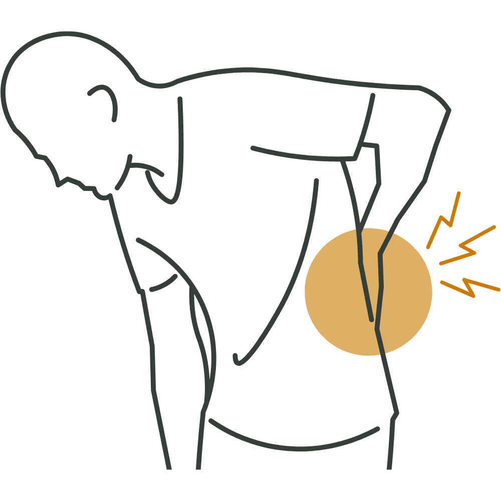
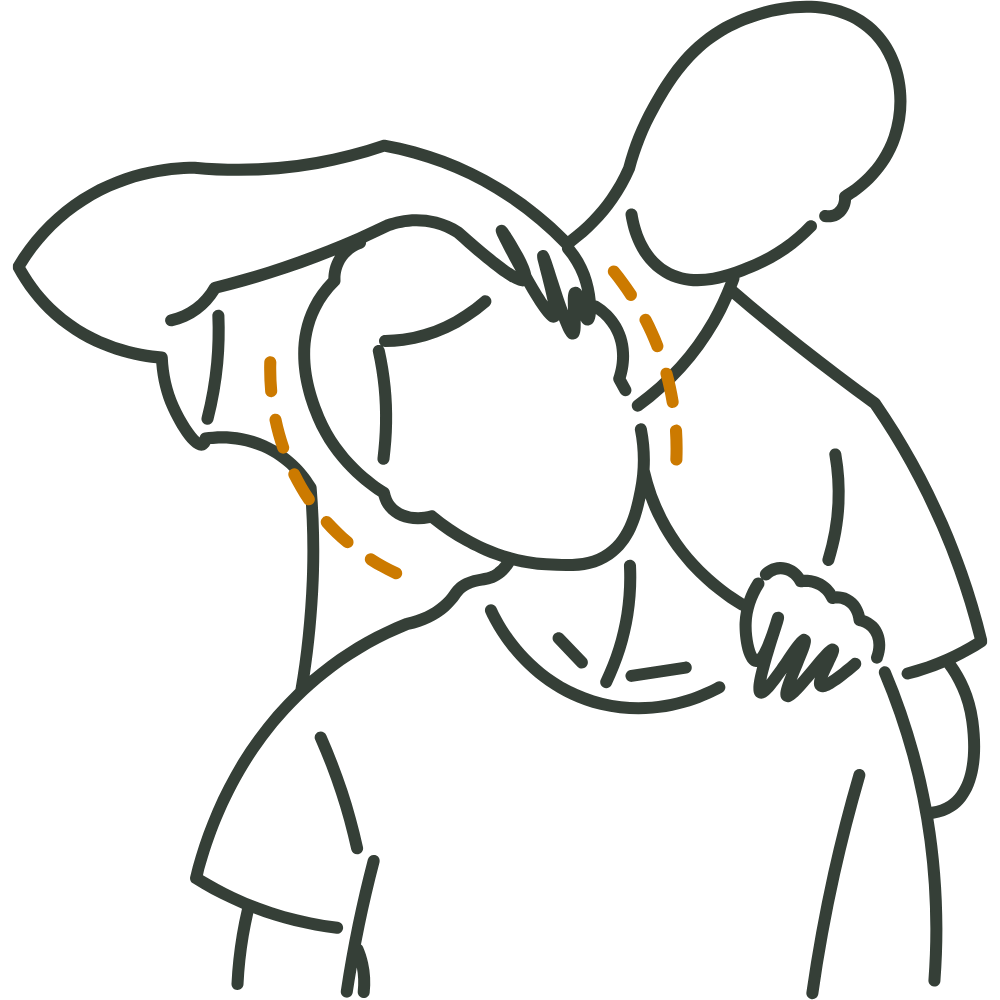
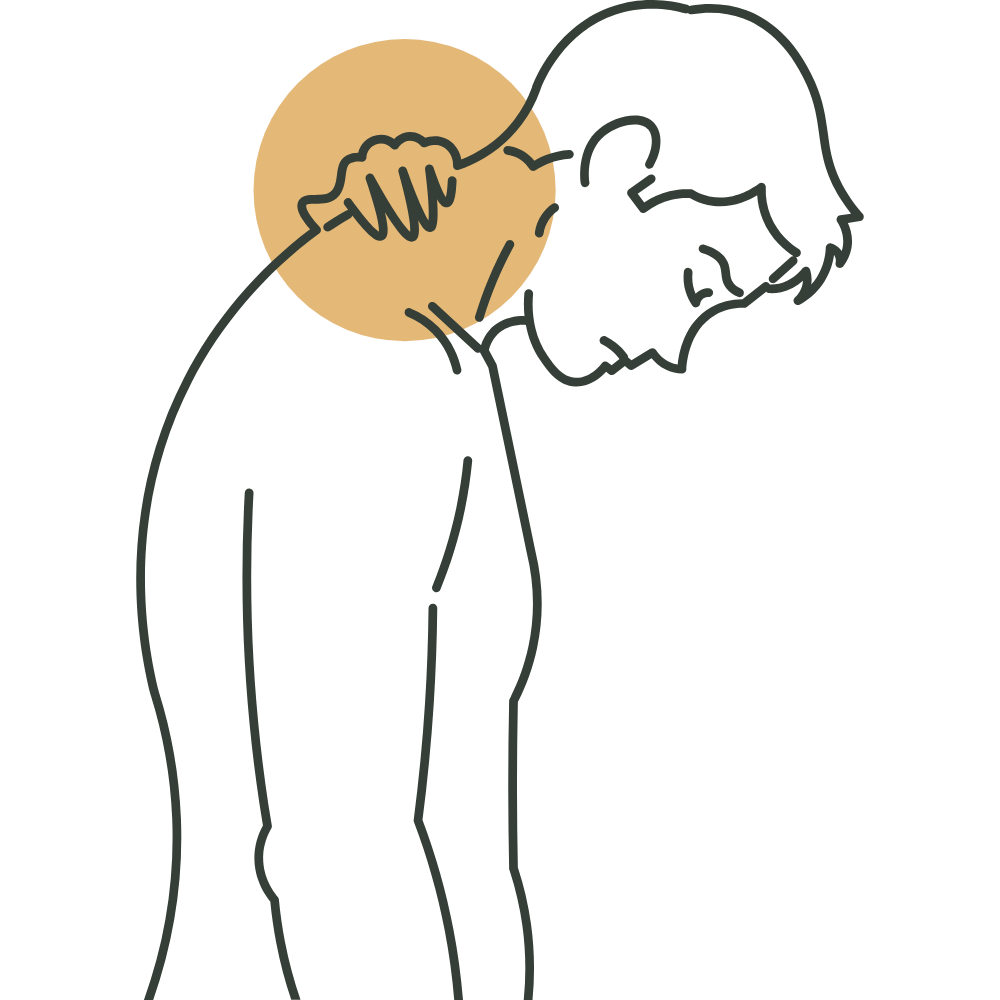
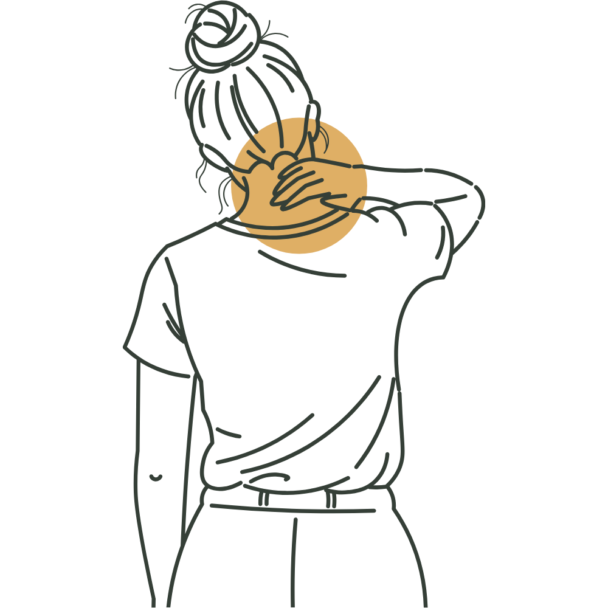
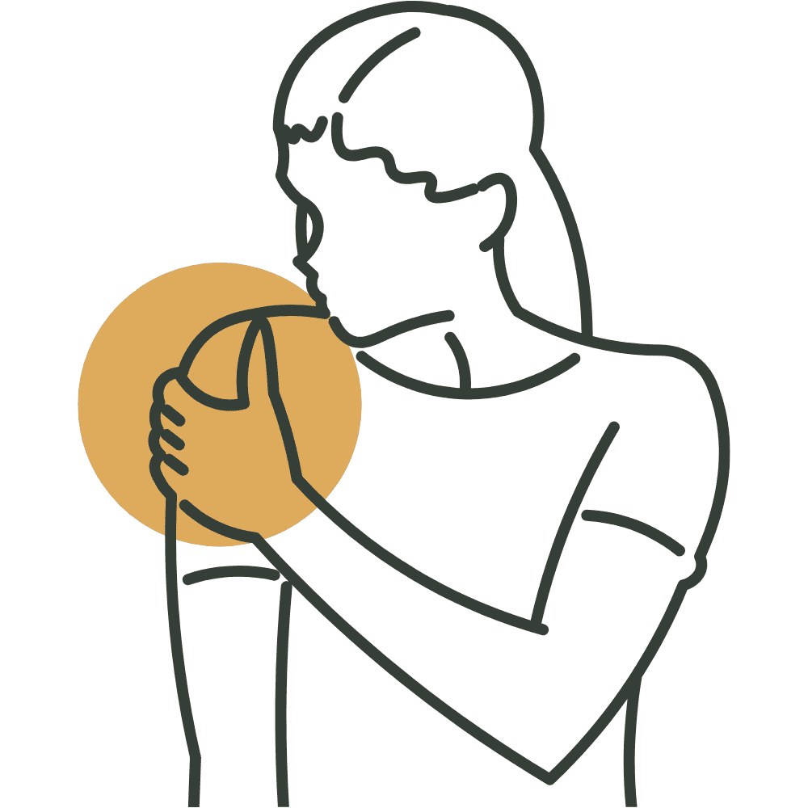
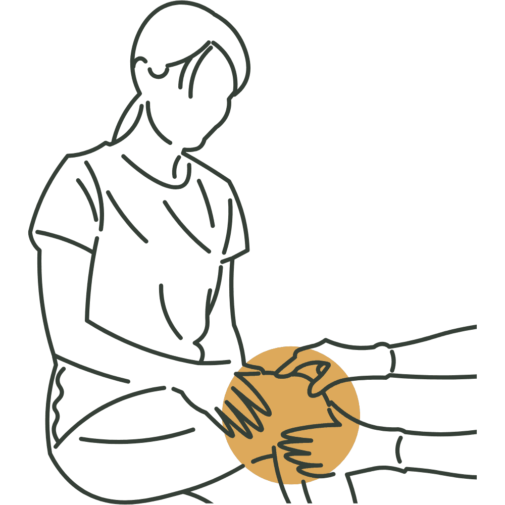
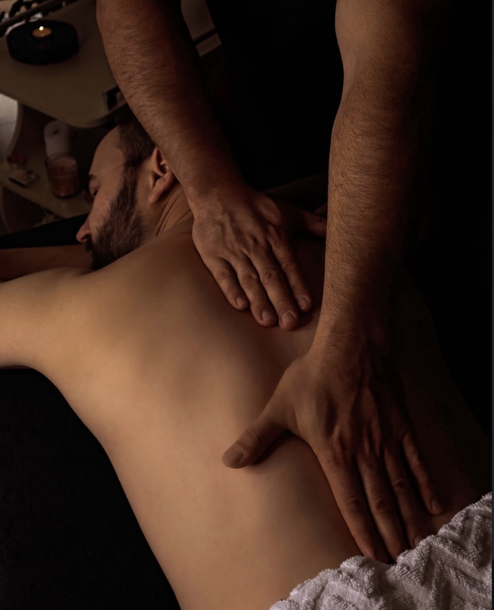
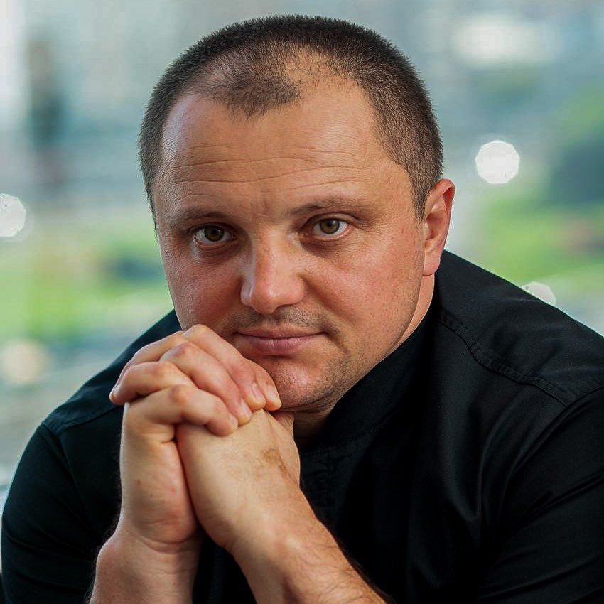

Сергій Петрик
Допомагаю тілу відпустити біль і напругу.
Вам буде комфортно зі мною.
Філософія
Без агресії.
Без поспіху.
«Тіло — не машина, яку можна «відрегулювати» одним різким рухом. Воно — система, яка реагує, адаптується і тримає в собі все, що з вами відбувалось.»
Тіло пам'ятає
Кожна травма, кожен стрес, кожна незручна поза за комп'ютером — тіло це записує. Не в голові, а в тканинах: у фасціях, м'язах, зв'язках.
Хронічний біль часто — не там, де болить. Напруга в попереку може тягнутися від стоп. Головний біль — від щелепи або шиї. Тіло компенсує, адаптується, тримає — аж доки не може більше.
Моє завдання, як остеопата — знайти першопричину, а не просто зняти симптом. Кожен сеанс будується під конкретну людину: поєднання остеопатії, масажу і за потреби сухої голки — залежно від того, що потрібно вашому тілу сьогодні.
З чим я можу допомогти
-

Хронічний біль
-

Часті головні болі та мігрені
-

Порушення постави
-

Проблеми зі сном і хронічна втома
-

Стрес і м'язова напруга
-

Відновлення після травм або операцій
Чому болить
-
01
Фасції — павутиння напруги
Фасція оточує кожен м'яз, орган і кістку. Коли вона скорочується — ланцюжок напруги тягнеться через все тіло.
-
02
Тригерні точки
Маленькі вузлики в м'язах — місця хронічного спазму. Вони «посилають» біль у зовсім інше місце.
-
03
Стрес живе в тілі
Хронічний стрес підвищує м'язовий тонус у всьому тілі. М'які техніки допомагають нервовій системі вийти зі стану постійної готовності.
-
04
Компенсації накопичуються
Давня травма стопи змінює хід — перевантажує коліно — скошує таз — болить у попереку. Завдання остеопата — розплутати цей ланцюжок.
Як я працюю
Кожен сеанс — унікальний. Я обираю і комбіную техніки під ваш запит і стан тіла саме сьогодні.
-
Остеопатія принципово відрізняється від мануальної терапії. Тут немає різких маніпуляцій — є терпіння, увага і тонка робота з тканинами.
Остеопатичні техніки
Остеопатія виходить із простої ідеї: тіло здатне саморегулюватися, якщо нічого йому не заважає.
Завдання остеопата — знайти, що заважає, і м'яко це усунути.
Я працюю руками: оцінюю рухливість тканин, суглобів і внутрішніх органів, виявляю зони обмеження та хронічного напруження.
Через м'які техніки — міофасціальні, краніосакральні, вісцеральні — відновлюється нормальний рух і кровопостачання.
Без болю, без різких маніпуляцій. І завжди з увагою до всього організму, а не лише до місця, де болить.
-
Ви можете поставити будь-яке питання — і зупинити процес у будь-який момент. Важливо, щоб вам було спокійно.
Суха голка (Dry Needling)
Тонкі голки вводяться прямо в тригерні точки — місця, де м'яз застряг у хронічному спазмі і просто не може розслабитись сам.
Це не акупунктура: суха голка працює з нейром'язовою системою і має серйозну доказову базу.
М'яз реагує на голку коротким скороченням — і відпускає. Саме так знімається глибока напруга, до якої руками складно дістатись. Кровопостачання відновлюється, запалення спадає.
Метод добре поєднується з остеопатією — коли м'яз відпускає, з тілом можна працювати глибше і точніше.
P.S. Боятись не варто.
P.P.S. Більшість людей описують відчуття як тупий тиск або тепло — і дивуються, що було не так страшно, як здавалось.
-
Після першого сеансу тіло продовжує «перебудовуватись» ще кілька днів — це нормально. Іноді відчувається легка втома або нові відчуття в тілі. Це знак, що процес пішов.
Кінезіотейпування
— це метод підтримки м'язів і суглобів за допомогою еластичного пластиру, що повторює властивості шкіри. На відміну від жорстких фіксаторів, тейп не обмежує рух — він м'яко направляє його, залишаючи тілу свободу.
Наклеєний за певною технікою, він злегка підтягує шкіру й створює простір між нею та підлеглими тканинами — це знижує тиск на больові рецептори і активує лімфодренаж.
Еластичний тейп підтримує м'язи і суглоби між сесіями — продовжує ефект роботи, зменшує набряк і нагадує тілу про правильну позицію ще кілька днів. Носити можна під одягом, у воді і під час фізичної активності.
Як проходить сеанс
-
01
Розмова і запит
Починаємо з діалогу. Уважно слухаю ваш запит: що болить, коли почалось, як змінюється. Ваша розповідь — перша частина діагностики.
-
02
Діагностика руками
Оцінюю рухливість, тонус м'язів, стан фасцій. Шукаю не лише там, де болить — а де знаходиться першопричина.
-
03
Мʼяка робота з тілом
Підбираю техніки під ваш запит: остеопатія, масаж, суха голка або їх поєднання. Ви регулюєте комфорт — боляче не має бути.
-
04
Рекомендації після сеансу
Що робити між сеансами, які рухи підтримають результат, скільки сеансів може знадобитись. Ефект продовжується ще кілька днів.


Про мене
Я — спортсмен, кандидат у майстри спорту з рукопашного бою. Добре знаю, що таке біль, травми та відновлення — і з власного досвіду, і з багаторічної практики.
Саме спорт навчив мене розуміти тіло глибше: як воно реагує на навантаження, де накопичується напруга і чому біль не з’являється випадково.
У роботі я поєдную це розуміння з м’яким підходом. Тіло не потрібно змушувати — йому потрібно допомогти.
Для мене важливо, щоб людина почувалась у безпеці та могла розслабитися. Кожен сеанс будується індивідуально під ваш запит і стан, адже кожне тіло має свою історію і свій темп відновлення.
Питання перед першим сеансом
-
Це боляче?
Ні. Робота м'яка, ви самі регулюєте рівень комфорту. Може бути відчуття тепла, легкого тиску або «відпускання» — але не болю. Якщо щось дискомфортно — одразу кажіть.
-
Скільки сеансів потрібно?
Залежить від запиту. Гостра проблема — іноді 1–2 сеансів. Хронічний стан, якому роки — курс 4–6 сеансів. Обговоримо після першого візиту.
-
Що таке суха голка? Це страшно?
Голки тонші за акупунктурні, вводяться в конкретні точки м'язового спазму. Більшість людей відчуває лише легке поколювання або тепло. Це нейром'язова техніка з доказовою базою, не акупунктура.
-
Що буде після сеансу?
Часто — відчуття легкості й тепла. Іноді наступного дня легка втома або нові відчуття в тілі: тіло продовжує перебудовуватись. За 1–2 дні проходить, залишається лише полегшення.
-
Чим відрізняється від масажу?
Масаж працює з м'язами і розслабленням. Остеопатія — з усією системою: суглобами, фасціями, нервовою системою. Шукає причину, а не лише знімає симптом.
-
Чи є протипоказання?
Є окремі стани: онкологія, гострі запальні процеси, переломи в стадії загоєння. Якщо є сумніви — напишіть заздалегідь, розберемося разом.
Відгуки про мою роботу
-
❝ Сергій - майстер своєї справи. Творить дива. Рекомендую! ❞
-
❝ Дуже вдячна і задоволена лікуванням стопи у Сергія, погляд - рентген, дотик - цілющий, кращий ефект, ніж у апаратних методик. ❞
-
❝ Майстер своєї справи. Велике дякую за допомогу бути здоровою! ❞
-
❝ Доброго вечора!!! Дякую Вам за антицілюлитний масаж 🤗🤗🤗! Це 🔥🔥🔥, обʼєми зменшились, тіло підтянулось, а саме головне я отримала не тільки результат на тілі, а й задоволення від сеансів !!! Ви найкращий, буду Вас рекомендувати своїм подругам 😊😊😊 ❞
-
❝ Сергій, велике спасибі за масаж, я стала новою людиною: випрямилась спина, покращилось дихання, захотілося правильно харчуватися. Ще раз дякую і до швидкої зустрічі 🙌🏻 ❞
-
❝ За свою спину і шию, за отримане задоволення від масажу дякую Вам, Сергію! Після кожного масажу спина відразу випрямляється, хочеться тримати її рівно, всі затиски знімаються, настрій піднімається, з'являється відчуття легкості. Дякую за увагу, кожен раз цікавилися, як я себе почуваю (що дуже ГІДНО професіонала). Величезне Вам спасибі! Буду рекомендувати всім! ❞
Ціни
- Остеопатична сесія 1500 грн / 60 хв
- Загальний масаж тіла 2200 грн / 90 хв
Контакти
Адреса студії
вул. Митрополита Андрія Шептицького 4-А, ТРЦ "КОМОД"Метро "Лівобережна"
За попереднім записом